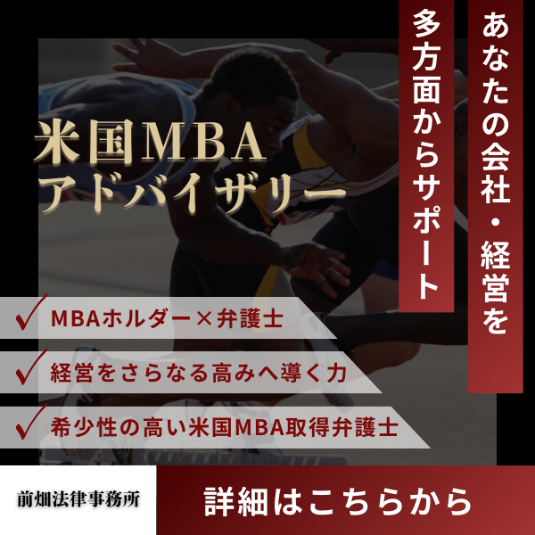

債権回収（売掛金・貸付金・請負代金など）のご相談
こんな悩みありませんか？
売掛金の未入金
貸付金の返済遅延
検収済なのに未払い
内容証明を出したい
支払督促・訴訟を検討
仮差押えで保全したい
取引先の倒産が心配
連帯保証の対応
まずは状況・証拠資料を確認し、最適な回収ルートをご提案
初回相談：30分 5,500円（税込）
受付時間：平日9:00〜17:00（予約制）
こんな方におすすめです
未入金が続く取引先を抱える中小企業の経営者
売掛金の回収と取引継続の両立を検討
検収済みなのに代金が支払われない事業者
請負代金・成果物代金の未払い
知人・取引先に貸したお金が返ってこない個人・個人事業主
借用書・LINE/メール履歴はあるが回収できない
倒産懸念がある相手から少しでも確実に回収したい
仮差押え等の保全で先手を打ちたい
事案の規模や相手方の資力・支払意思に応じて、任意交渉／内容証明／支払督促・訴訟／仮差押え・強制執行を組み合わせ、最短ルートの回収を目指します。
弁護士に相談するメリット
早期対応で回収率を高める
内容証明による督促、支払督促や訴訟提起、仮差押えなど、状況に応じて最適な手段を選択。
早期の法的対応は、資産流出の防止と回収可能性の向上につながります。
証拠整理と手続コストの最適化
契約書・請求書・メール履歴等の証拠を精査し、任意交渉から強制執行まで無駄のない段取りで進行。
手続選択と費用対効果の観点から、現実的な回収プランを提示します。
交渉・訴訟・執行まで一貫対応
和解交渉、訴訟での債権確定、預金・売掛・不動産等の差押えによる強制執行まで一気通貫。
社内対応の負担を軽減し、本業に集中できます。
未入金・遅延が発生したら、まずご相談ください
初回相談：30分 5,500円（税込）
受付時間：平日9:00〜17:00（予約制）

MBA×弁護士の債権管理・回収サポート
米国MBA（経営学修士）を取得した弁護士が
与信設計・回収フロー・契約見直しまで、経営と法務の両面から支援します。
- 与信・締め日・遅延損害金・担保/保証の設計
- 回収プロセスの標準化（督促→内容証明→保全→訴訟→執行）
- テンプレート整備（注文書・検収書・請求/催告書・和解書）
- 社内ルールとKPI（DSO/回収率）の可視化・改善